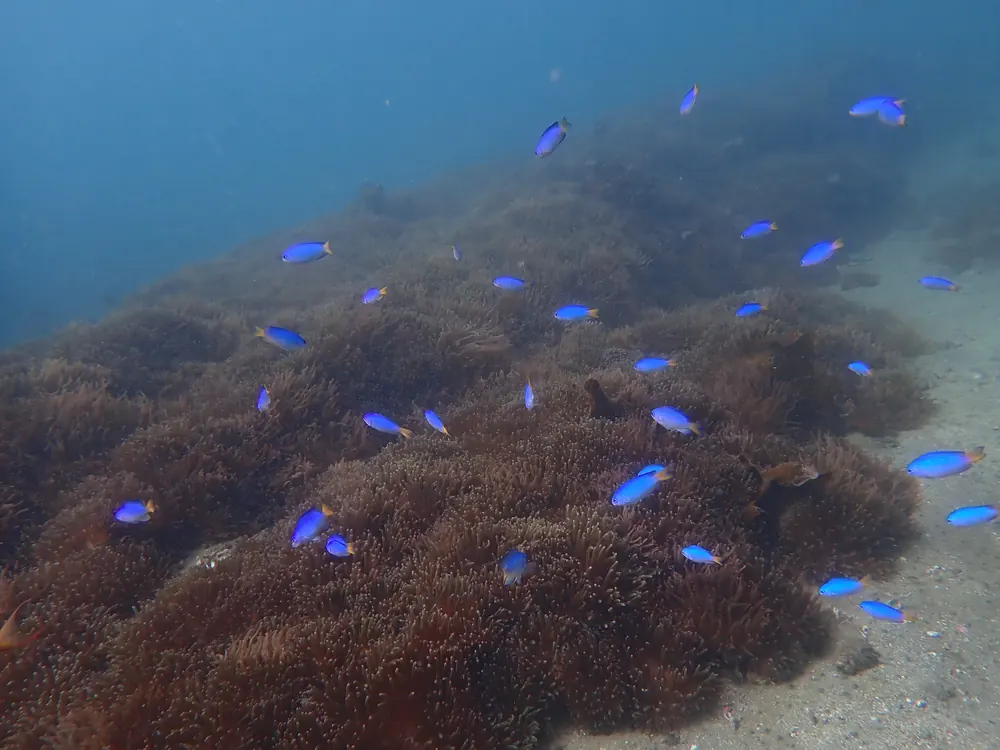
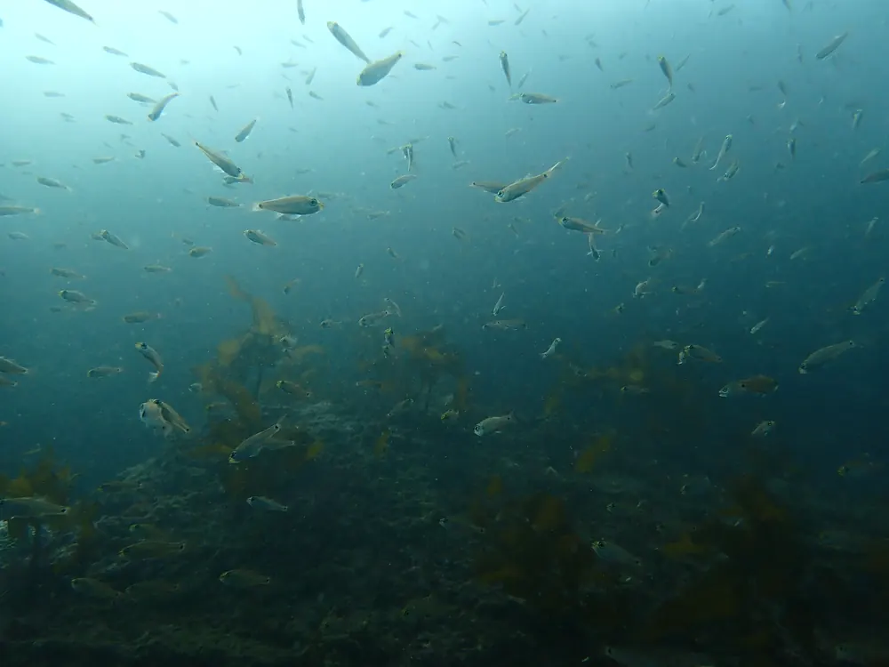

第1章 / 全8章 · 確認問題5問
海を「しくみ」で見る。
名前を覚える前に、生き物とまわりの環境がどうつながっているかを見る目を持ちましょう。陸と海のちがいを知ると、水中で見えるものが変わります。
この章で分かること
- 「生態学」と「生態系」の意味を説明できる
- 生物群集・個体群・生息環境・生態的地位のちがいが分かる
- 陸と水の環境のちがいを3つ以上あげられる
「生態学」と「生態系」
生態学（エコロジー）は、生き物と、そのまわりの環境とのつながりを調べる学問です。ここでいう環境には、水・光・温度・酸素・海底の岩や砂のような生きていない要素と、同じ場所に暮らすほかの生き物の両方が入ります。
生態系（エコシステム）は、ある場所にいる生き物すべてと、その場所の生きていない環境とが、ひとまとまりとして働いている自然のしくみです。地球全体も、海も、三浦の岩場も、岩のすき間も、どこまでを見るかで、それぞれ一つの生態系として考えられます。生態系の中に、さらに小さな生態系があるのです。海は、地球でいちばん大きな生態系です。
群集・個体群・生息環境・生態的地位
- 生物群集：ひとつの生態系の中で、関わり合いながら暮らす、いろいろな種類の生き物の集まり。
- 個体群：その中の、同じ種類の生き物のまとまり。同じ海にいても、ほとんど交わらない別々の群れは、別の個体群として扱われます。
- 生息環境（ハビタット）：生き物が暮らす場所と、その条件。とても限られた場所にしかいない種もいれば、広い範囲で暮らす種もいます。砂粒のすき間のような、ごく小さなすみかもあります。
- 生態的地位（ニッチ）：その場所での役割や暮らし方。何を食べ、何に食べられ、いつ・どこを使うか。
覚え方は、生息環境は「住所」、生態的地位は「職業」。ほかの魚の体をきれいにする「掃除屋」の仕事は、魚とエビのように、まったく別の種類の生き物が受け持つこともあります。三浦の海にいるオトヒメエビも、魚の体の寄生虫を食べることで知られています。

職業：魚の体の寄生虫を食べる「掃除屋」オトヒメエビ（三浦の海）
職業：疑似餌で小魚をおびき寄せる「待ち伏せの狩人」カエルアンコウ（三浦の海）
陸と水は、ここがちがう
陸の感覚のまま水中を見ると、見落としが増えます。ちがいは大きく分けて次のとおりです。
- 密度：水の密度は空気の約800倍。小さな生き物が一生浮いたまま暮らせます（プランクトン）。陸には、一生を空中に浮いたまま暮らす生き物は、ほぼいません。
- 水の動き：流れが、餌になるプランクトンや、生き物の卵・幼生を遠くまで運びます。
- 光：水は光を吸収します。とても澄んだ海でも、植物が育つほどの光が届くのは上の明るい層だけ。濁った水では、その層はずっと浅くなります。
- 色：赤・オレンジ・黄・緑・青の順に吸収されます。深いほど赤が消え、青と緑が残ります。ライトを当てると赤が戻るのはこのためです。
- 重力：浮力が重力をほぼ打ち消すので、骨のような硬い支えがなくても大きくなれます（クラゲなど）。上下に動くのも、陸より楽です。
- 酸素：空気中の酸素は約21％でどこでもほぼ同じ。水中の酸素は、波の立つ岸では多く、よどんだ泥の底では少ないなど、場所や条件で大きくちがいます。
植物が主役の陸、動物が主役の海
陸の景色をつくるのは、大きくて長生きの植物です。だから「森」「草原」のように、植物の名前で呼ばれます。
海の植物の多くは、顕微鏡でしか見えない植物プランクトン。数はとても多いのですが、すぐに食べられてしまいます。海の景色をつくるのは、長生きの動物です。だから「サンゴ礁」「カキ礁」のように、動物の名前で呼ばれることが多いのです。
例外は、コンブのなかまの大きな海藻がつくる森。三浦の海のカジメやアラメの林も、海藻が景色をつくり、たくさんの生き物の住所になっています。
深い海の、熱い水が噴き出す場所のまわりには、光ではなく化学物質から養分をつくる細菌を土台にした生き物の集まりもあります（化学合成）。

確認問題 · 第1章
理由まで、確かめよう。
答えを選ぶと解説が出ます。5問すべてに正解したら、この章を完了できます。